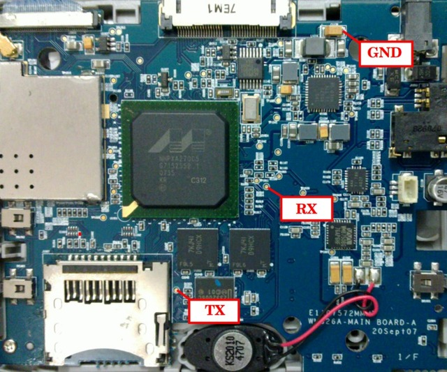
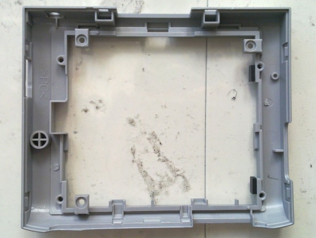
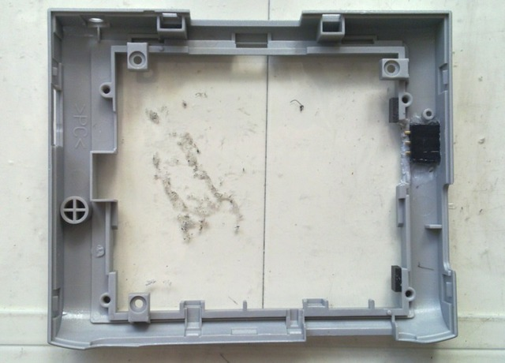
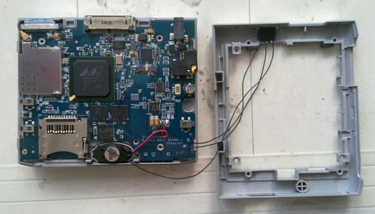

TX、RX和GND位置如下：




Aeronix Zipit2 Version 1.00 7-10-2007
blob version 2.0.5-pre3 for Intel HCDDBBVA0 (Mainstone)
Copyright (C) 2007 Jan-Derk Bakker and Erik Mouw
blob comes with ABSOLUTELY NO WARRANTY; read the GNU GPL for details.
This is free software, and you are welcome to redistribute it
under certain conditions; read the GNU GPL for details.
RTC Clock Enabled.
Memory map:
0x02000000 @ 0xa0000000 (32 MB)
LCD: init ...Loading blob from flash . done
Loading kernel from flash ......... done
Autoboot (0 seconds) in progress, press any key to stop
Starting kernel ...
Starting kernel (really, I mean it)...
Next step is to start the kernel
Linux version 2.6.21.1 (jkaisner@savior.csd.local) (gcc version 3.4.1 20040714 (TimeSys 3.4.1-7)) #162 Wed Nov 28 15:21:59 EST 2007
CPU: XScale-PXA270 [69054117] revision 7 (ARMv5TE), cr=0000397f
Machine: Intel HCDDBBVA0 Development Platform (aka Mainstone)
Memory policy: ECC disabled, Data cache writeback
Run Mode clock: 208.00MHz (*16)
Turbo Mode clock: 312.00MHz (*1.5, active)
Memory clock: 104.00MHz (/2)
System bus clock: 104.00MHz
CPU0: D VIVT undefined 5 cache
CPU0: I cache: 32768 bytes, associativity 32, 32 byte lines, 32 sets
CPU0: D cache: 32768 bytes, associativity 32, 32 byte lines, 32 sets
Built 1 zonelists. Total pages: 8128
Kernel command line: console=ttyS2,115200
PID hash table entries: 128 (order: 7, 512 bytes)
Console: colour dummy device 80x30
Dentry cache hash table entries: 4096 (order: 2, 16384 bytes)
Inode-cache hash table entries: 2048 (order: 1, 8192 bytes)
Memory: 32MB = 32MB total
Memory: 28896KB available (2432K code, 308K data, 808K init)
Mount-cache hash table entries: 512
CPU: Testing write buffer coherency: ok
NET: Registered protocol family 16
Mainstone configured to boot from processor-flash
Set Zipit2 lcd paramaters...
ZIPIT2 - fbmem_init..
Time: pxa_timer clocksource has been installed.
NET: Registered protocol family 2
IP route cache hash table entries: 1024 (order: 0, 4096 bytes)
TCP established hash table entries: 1024 (order: 1, 8192 bytes)
TCP bind hash table entries: 1024 (order: 0, 4096 bytes)
TCP: Hash tables configured (established 1024 bind 1024)
TCP reno registered
populate_rootfs...initramfs: start: 0xC001C360, end: 0xC00CCA33
NetWinder Floating Point Emulator V0.97 (double precision)
audit: initializing netlink socket (disabled)
audit(3.880:1): initialized
JFFS2 version 2.2. (NAND) (C) 2001-2006 Red Hat, Inc.
io scheduler noop registered
io scheduler anticipatory registered
io scheduler deadline registered
io scheduler cfq registered (default)
ZIPIT2 lccr0 = 0x5b00af8
ZIPIT2 lccr3 = 0x4b00006
pxa2xx-fb pxa2xx-fb: machine LCCR0 setting contains illegal bits: 00300878
pxa2xx-fb pxa2xx-fb: machine LCCR3 setting contains illegal bits: 00300000
pxa2xx-fb pxa2xx-fb: Double Pixel Data (DPD) mode is only valid in passive mono single panel mode
ZIPIT2 - register_framebuffer
Set Zipit2 lcd power 1...
ZIPIT2 - pixmap.addr == NULL
ZIPIT2 - SHOW LOGO
PXAFB driver registered...
pxa2xx-uart.0: ttyS0 at MMIO 0x40100000 (irq = 22) is a FFUART
pxa2xx-uart.1: ttyS1 at MMIO 0x40200000 (irq = 21) is a BTUART
pxa2xx-uart.2: ttyS2 at MMIO 0x40700000 (irq = 20) is a STUART
RAMDISK driver initialized: 16 RAM disks of 16384K size 1024 blocksize
Mainstone configured to boot from processor flash
Mainstone configured: 0x00000000, 0xC3000000, 0x04000000
Probing processor flash at physical address 0x00000000 (16-bit bankwidth)
processor flash: Found 1 x16 devices at 0x0 in 16-bit bank
Intel/Sharp Extended Query Table at 0x0039
Intel/Sharp Extended Query Table at 0x0039
Intel/Sharp Extended Query Table at 0x0039
Intel/Sharp Extended Query Table at 0x0039
Intel/Sharp Extended Query Table at 0x0039
cfi_cmdset_0001: Erase suspend on write enabled
RedBoot partition parsing not available
cmdlinepart partition parsing not available
Using static partitions on processor flash
Creating 3 MTD partitions on "processor flash":
0x00000000-0x00010000 : "Bootloader"
0x00010000-0x00240000 : "Kernel"
0x00240000-0x00800000 : "Filesystem"
mice: PS/2 mouse device common for all mice
mmc_detect_change delay = 0
TCP cubic registered
NET: Registered protocol family 1
NET: Registered protocol family 17
XScale iWMMXt coprocessor detected.
mmc_rescan...
Freeing init memory: 808K
init started: BusyBox v1.5.1 (2007-08-10 11:24:28 EDT) multi-call binary
starting pid 165, tty '': '/etc/rc.d/rc.sysinit'
mount: mounting /dev/mmcblk0p1 on /mnt/sd0 failed
mount: mounting /dev/mmcblk0 on /mnt/sd0 failed
unmount SD card
umount: cannot umount /mnt/sd0: Invalid argument
Check for Ramdisk Updates
Boot from FFS
Booting from FFS
Loading GPIO Driver
Register GPIO driver...
Waiting 5 for SD card
Starting Z2Shell
./Zcovery: line 8: /mnt/ffs/bin/lid: not found
rmmod: audio_pxa: No such file or directory
/mnt/ffs/bin/toybox.sh: line 1: r#: not found
input: pxa27x-keyboard as /class/input/input0
Console: switching to colour frame buffer device 30x40
Set Zipit2 lcd power 0...
Set Zipit2 lcd power 1...
i2c /dev entries driver
I2C: i2c-0: PXA I2C adapter
I2C: i2c-1: PXA I2C adapter
insmod: cannot insert '/lib/gpio_driver.ko': File exists (-1): File exists
Chan1 = 9, Chan2 = 10, 00
wlan_main_service priority = 19:115:19:2
wlan_reassoc_service priority = 19:115:19:2
[348] Dec 31 19:00:13 Running in background
rmmod: audio_pxa: No such file or directory
mknod: /dev/audio: File exists
insmod: cannot insert '/mnt/ffs/modules/i2c-core.ko': File exists (-1): File exists
insmod: cannot insert '/mnt/ffs/modules/i2c-algo-bit.ko': File exists (-1): File exists
insmod: cannot insert '/mnt/ffs/modules/i2c-pxa.ko': File exists (-1): File exists
ASoC version 0.13.0
WM8750: WM8750 Audio Codec 0.12
asoc: WM8750 <-> pxa2xx-i2s mapping ok
i2c: error: exhausted retries
i2c: msg_num: 0 msg_idx: -2000 msg_ptr: 0
i2c: ICR: 000007e0 ISR: 00000002
i2c: log: [00000446:000007e0]
ZIPIT2 - fb_open
ZIPIT2 - fb_open
ZIPIT2 - fb_ioctl FBIOGET_FSCREENINFO
ZIPIT2 - fb_mmap....
ZIPIT2 - fb_ioctl FBIOGET_FSCREENINFO